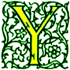

Signs for technical/specialized vocabulary
David Bar-Tzur
Links updated monthly with the help of LinkAlarm.

Yagi antenna array at the Max-Planck-Institut für Aeronomie1; the element ytterbium.2
EXPLANATION OF THE GLOSSING SYSTEM
(to understand how I describe the signs in this dictionary).
For content knowledge of how to use the physics terms in context, see Guided tutorial in physics for interpreters.
For negotiating and developing temporary signs, see Preparation and sign negotiation
For vocabulary lists to determine helpful signs for a specific discipline, see Vocabulary lists by topic.
- Yaakov
- J-A-C-O-B. I spell "Jacob" rather than Y-A-A-K-O-V, because it is probably better known to the deaf person, unless you know differently.
- yad
- S-I-L-V-E-R, (2h)F-CL 'thin cylindrical object'. TORAH, 1-CL'point to reading as it scans from line to line'.
- Yihadut
- (1) JEWISH RELIGION. (2) (more broadly) JEWISH STUDY.
- Yahrzeit
- EVERY-YEAR REMEMBER DEATH.
- Yankee (Southern pejorative)
- Palm side of [Y] is rubbed against NDS armpit.
- yard (unit of measurement)
- Y-D.
- yarmulke
- (1) [5:], PO > signer, taps at top of head. (2) BLACK + (1). (3) (2h)[L:], POs down, are placed upon the head. (4) [C], PO down, taps head twice with palm.
- yarn
- NDH [I], PO > signer, FO > DS. DH [5^], closes on NDFT and pulls some yarn off the "skein". For a movie of this sign, see Dictionary of Sign (ASL) - yarn.
- y-axis
- ~ (2-D)
-
"Y"@index finger + [1] draws vertical line down to include
L-CL------------------------------------------------------------>
the negative part of the axis.
------------------------------->
- ~ (3-D)
-
"Y"@middle finger + [1] draws horizontal line at thumb level,
3D-CL------------------------------------------------------------->
starting well back to include the negative part of the axis.
-------------------------------------------------------------->
- y-coordinate
- "Y" C-O-O-R-D.
- Yechezkel (Bible)
- E-Z-E.
- Yehoshua (Bible)
- J-O-S-H.
- Yemen (اليمن)
- [Y], FO > NDS, rubs palm against midchest while moving up and down. For a film of this sign, click on Yemen (اليمن). To see the reference source for the sign(s) for this country or to look up other countries in the same geographical area, see Indigenous signs for countries. To find signs for cities within this country (some have no entries) see Indigenous signs for cities.
- Yerushalayim
- (1) (Israeli Sign) touch [B] to lips, then bow forward with (2h)[B], POs down. [< kissing a mezuzah (a scroll of Biblical verses affixed to doorposts), the city is famous for its huge mezuzot and the Muslims bowing at the mosque of Omar.] (2) [B with thumbs flush with other fingers but not folded into palm], touches mouth and then pronates. [< kissing the Western Wall (the retaining wall of the Jewish temple).]
- Yerushalayim haB'nuah
- GOD BUILD JERUSALEM NEW*.
- yeshiva
- (1) Y-COLLEGE. (2) [Y], PO away, held at side circles parallel to the chest.
- yeshiva bachur, bochur
- YESHIVA STUDENT.
- Yiddish
- (1) JEWISH GERMAN, where the first sign is [5^], PO > signer, strokes imaginary beard. (2) JEWISH GERMAN LANGUAGE. For a QuickTime movie of this sign, see ASL browser - Jew.
- Yiddishkeit
- (1) JEWISH RELIGION. (2) (more broadly) JEWISH STUDY.
- yield
- ~ (results)
- (1) Y-I-E-L-D. (2) R-END.
- ~ (to temptation)
- BOTHER++ + [B] holds palm against chest, FO > NDS, and with reluctance moves hand away until PO is up with a single cluck of the tongue.
- y-intercept
- ~ (2-D)
-
"Y" + [1] intersects middlefinger like CONFLICT
L-CL---------------------------------------------->
- ~ (3-D)
-
"Y" + [1] intersects middlefinger like CONFLICT
3d-CL---------------------------------------------->
- yira
- (1) [A], PO > signer is beaten against heart. (2) NDH is clasped over DH [S] and hands circle perpendicular to the chest.
- yirat chet
- (1) [A], PO > signer is beaten against heart. (2) NDH is clasped over DH [S] and hands circle perpendicular to the chest.
- yirat shemayim
- (1) [A], PO > signer is beaten against heart. (2) NDH is clasped over DH [S] and hands circle perpendicular to the chest.
- Yirmiyahu (Bible)
- J-E-R.
- Yishayahu (Bible)
- I-S-A.
- Yitzchak Avinu
- [I] taps fingertip against throat. [lt; the attempted sacrifice of Yitzchak (Isaac) by his father, Avraham (Abraham).]
- Yizkor
- SERVICE MEMORY DEAD. (Heb) "He will remember [opening words of the service]." A memorial service for those who have died.
- yoga
- (2h)[Y] taps thumbs to shoulders like a yoke.
- Yoel (Bible)
- J-O-E-L.
- yogurt
- NDH [C] acts as the container and DH [Y, PO down, acts as the spoon scooping the yogurt to the mounth twice. To see an animation of this sign, go to "yogurt" American Sign Language.
- Yom haKippurim
- (1) A-GUILTY. (2) Y,K-GUILTY. (< beating the heart while confessing a list of sins, which occurs several times during the service.) (3) DAY SORRY.
- Yom haShoah
- HOLOCAUST DAY.
- Yom Kippur
- (1) A-GUILTY. (2) Y,K-GUILTY. (< beating the heart while confessing a list of sins, which occurs several times during the service.) (3) DAY SORRY.
- Yonah (Bible)
- J-O-N.
- Young, Brigham (LDS [Mormon])
- (2h)[B], POs away are held at either side of the "beard" and brought together like the outline of a beard while changing to (2h)[Y].
- Yovel
- FIFTIETH YEAR, CELEBRATE.
- ytterbium
- Y-B. For more information on this and other elements, see The elements. And for fun, see Elements by Tom Lehrer. To see this song with captions, go to The Elements song by Tom Lehrer.
- yttrium
- "Y". For more information on this and other elements, see The elements. And for fun, see Elements by Tom Lehrer. To see this song with captions, go to The Elements song by Tom Lehrer.
- yttrium aluminum garnet (laser)
- Y-A-G.
- yttrium iron garnet (laser)
- Y-I-G.
- Yugoslavia
- [B^] runs down diagonal on body from NDS shoulder blade to DS waist. To see the reference source for the sign(s) for this country or to look up other countries in the same geographical area, see Indigenous signs for countries. To find signs for cities within this country (some have no entries) see Indigenous signs for cities.
Image credits
1. From http://www.so.estec.esa.nl/~dkoschny/Homepage/sousypic.htm (The SIV project - aerial view of the SOUSY radar), which is no longer extant.
2. From http://nobel.scas.bcit.bc.ca/resource/ptable/yb.htm (Ytterbium). This web site is no longer extant.

Home